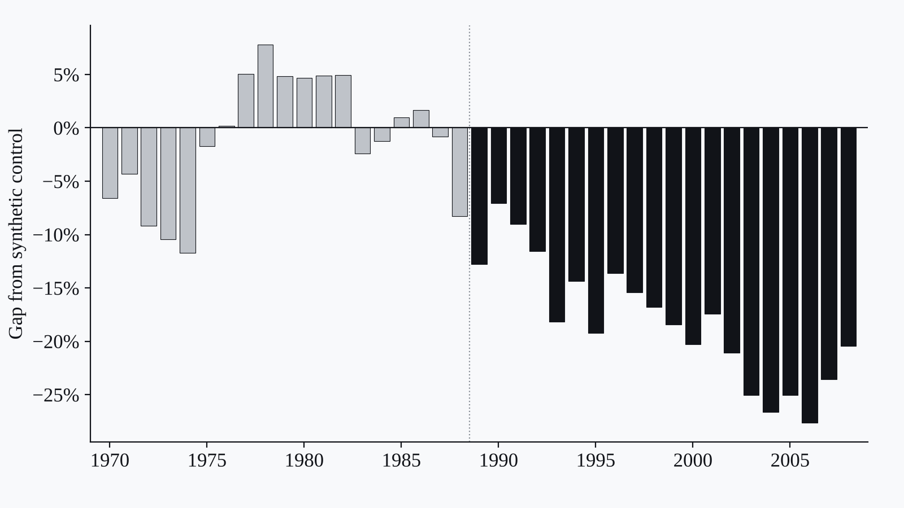

Yearly labor productivity gap between the Philippines and its synthetic control. Grey bars are the pre-treatment fit; black bars are post-1988 gaps (average 18.2%). Source: Cataytay, Deluna and Evangelio, synthetic control analysis.
Lead project · Impact evaluation · R
CARP and Agricultural Productivity: A Synthetic Control Study
Did the 1988 agrarian reform change farm productivity? A synthetic control comparison for labor, land and TFP.
Labor productivity about 18.2% below its synthetic control.